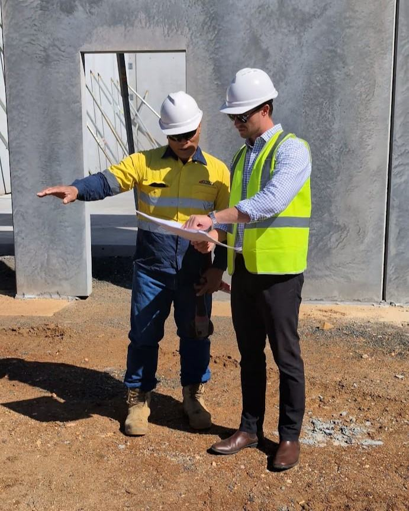

No promises of overnight success - just a practical process built from real projects.
This Form Takes Roughly 2 minutes To Complete
Real results from people going through the Development Navigator process.
"Before this, I couldn't even assess raw land or work out what a site was actually worth. Now I run the feasibility backwards from rent to land value, and I use the program's spreadsheets as finance-ready tools."
"This course has quite simply fast-tracked my development journey. Jack teaches the real-world strategies that matter and just proven methods you can use straight away."
"As a residential developer, it clearly outlines the differences between resi and commercial. I love the detail."

I'm Jack Chaffey, Director of Development at Stripes Group - a vertically integrated regional business operating across property development, engineering and civil construction, with a team of around 150 people.
My role covers site assessment, feasibility, consultant coordination, approvals, leasing and project strategy. I do that as part of a much broader team, because no commercial development is delivered by one person.
Through that role, I've led more than $45 million in commercial projects - completed and active developments - working alongside the wider Stripes team. So when I teach you what a DA actually costs, where a feasibility blows out, and what builders actually charge, it comes from live projects, not memory.
Development Navigator brings together the frameworks, tools and lessons I use across those projects - what has worked, what hasn't, and the mistakes that cost first-timers the most.
The goal isn't to promise easy money. It's to help you understand the process, assess opportunities clearly, and make your first commercial development a calculated move - not a gamble.